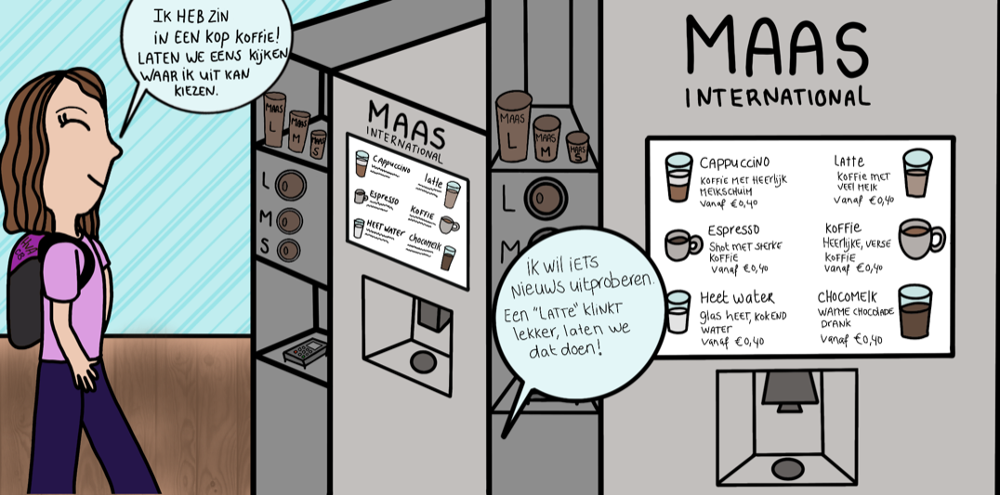
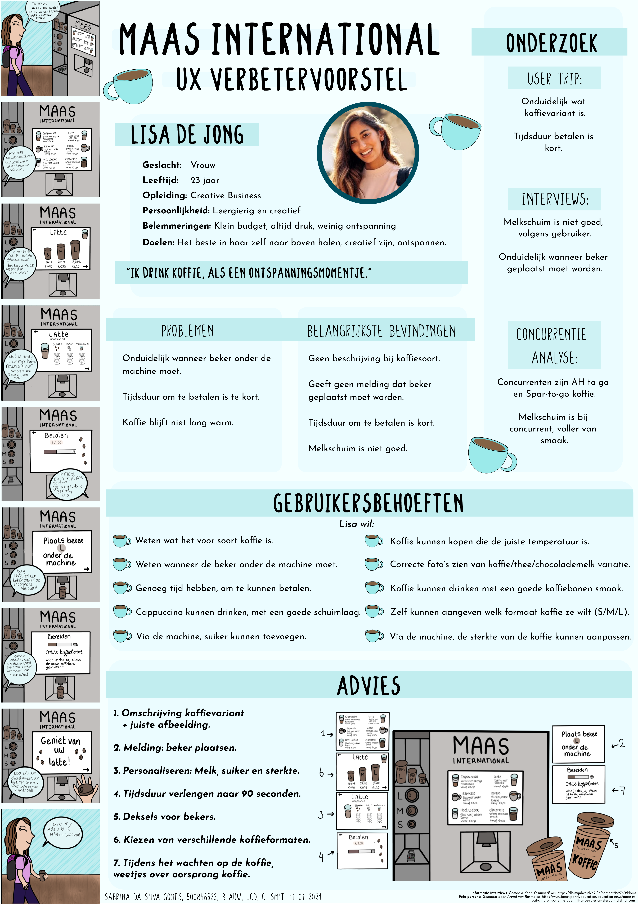

Projects
Project: Artis Royal Zoo
Focus: UX - UI
For this project, I had to investigate a User Experience design improvement for "Maas International Coffee machines". This advice should improve the user experience with the coffee machines. By doing different types of research on the target group, (Creative Business students) I could create valuable advice for this company.
The process
Research
For the course, User-Centered Design, user-friendliness (as the name of the course suggests) needed to be central. By doing all kinds of research, I was able to formulate valuable advice to make the experience with the coffee machines a bit better. Examples of the conducted research are Personas, Storyboards, Triangulation checks, and interviews.
Struggles during the process
It was a challenge to link all the research data back together. I wasn’t quite sure what the most important information was sometimes. There were different kinds of elements that could be improved. I wasn’t sure on which I had to focus. This made my research a bit chaotic at first. I tried to focus on a selection of elements and focus only on that.
Unfortunately, at the time of this project, we were in the middle of a pandemic and only followed lessons online. Almost at the end of the project, we were able to do some field research. The lack of research made It difficult to finish this project. That’s why this research may have not been as accurate as I would have liked.
How did I solve this
By combing all the research data together, it became clear that everything could be linked to each other. With this conclusion, I could formulate a piece of advice for Maas International. With the Covid-19 problem, it was a bit more difficult. I have tried to collect as much information by doing a lot of desk research. When the restrictions because of Covid-19 were lifted, it was safe to go to our school and test the coffee machines ourselves. I tried to think about all the possible scenarios someone could have. By doing this, I could empathize with the user more.
Important insights for next projects
For future projects, I must remind myself to take notes of ideas. Sometimes I had great ideas but didn’t write them down. Afterward, I forget a couple of things that could make the result even better. (I have a lot of notebooks; I should use them!) Furthermore, I will also try to do research in more different ways. For example, think of uncertain situations like Covid-19. Circumstances like this require creative thinking. It is important that you can apply other methods.
What did I think of this project?
User-Centered Design was one of my favorite subjects. It was very interesting to see which research methods are out there and what the best way was to implement them into this research. It was nice to see that you could eventually link everything back together (if the research was done properly). I also felt that I could use all my creativity in this when it comes to designing a solution. Think of creating storyboards and showing my research.
Poster with advice for Maas International
